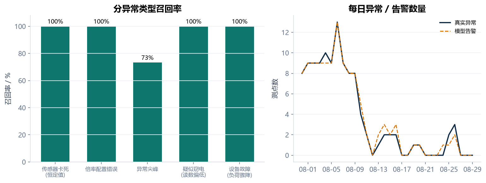
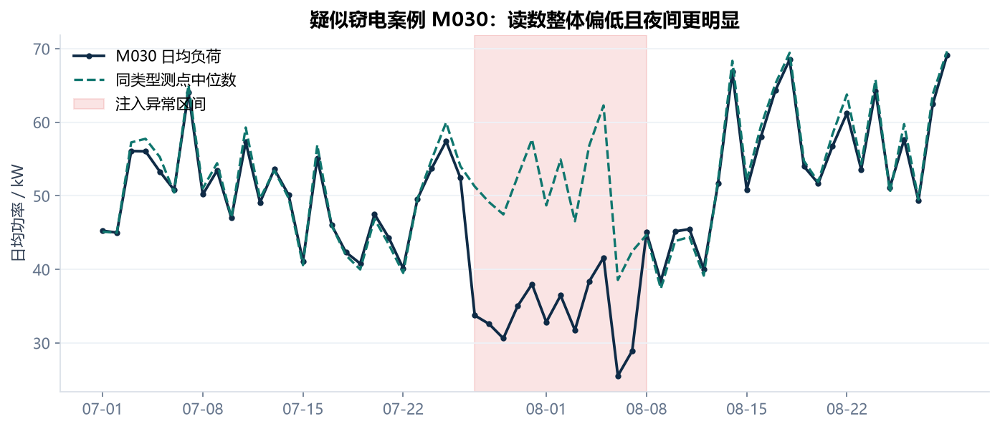
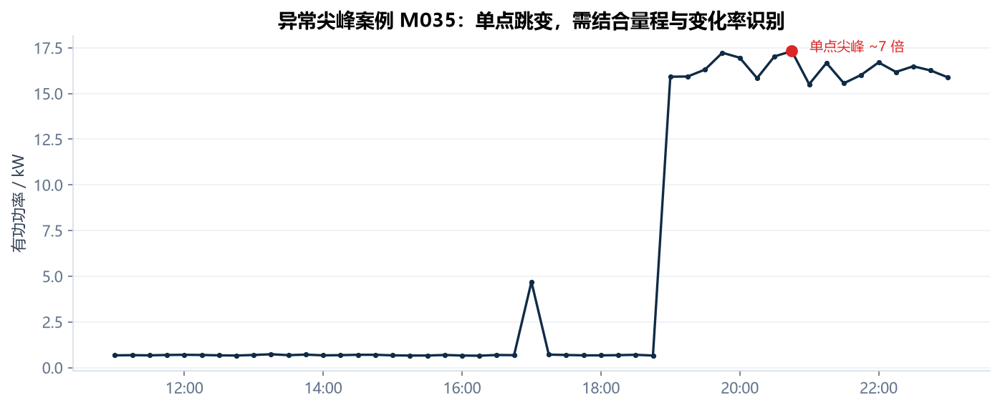

异常用能识别
预测是“明天大概用多少”，异常识别是“今天这个数不对劲”。后者更难：没有标签、误报会被业务骂、同一个数字在夏天和冬天含义不同。这一章讲清五类异常怎么认、规则和模型怎么配合、以及为什么“F1 0.956”背后还藏着 4 个漏报。
为什么异常识别比预测更难
先建立一个直觉：预测错 3%，业务能接受，因为购电计划有备用；异常识别漏 1 个窃电，可能就是几万块；误报 10 个，运维跑断腿，最后没人看告警——模型直接失效。
难点一：没有标签
真实项目里“哪台表在偷电”不会提前告诉你。你只有一堆曲线，以及事后稽核出的极少案例。所以纯监督学习走不通，必须用无监督 + 规则 + 少量人工反馈。
难点二：正常也会变
天气热了，空调负荷普涨 30%；订单多了，工厂全线抬高。如果只看“自己比昨天高”，你会把整个园区的正常增长全报成异常。
难点三：异常的定义在业务手里
“读数下降 30%”可能是窃电，也可能只是停产检修。模型只能给出“可疑”，最终判定必须有人工核查与工单闭环。
如何在没有标签的条件下，构造一个误报可控、原因可解释、严重度可分级的异常识别系统？答案是三层：数据质量层（表坏了）→ 行为异常层（用得不对）→ 设备状态层（设备坏了）。每层用不同的基线，不能混为一谈。
能耗预警是“和计划/预算比，超了就提醒”，例如“本月用电已超预算 8%”“今日负荷比计划高 15%”“单位产品电耗连续 3 天上升”。它依赖明确的参照值，偏运营管理。
异常识别是“没有计划可比，也要找出不正常”，靠自身历史与同业基线，偏稽核与运维。
两者是上下游：预警负责提醒，异常识别负责解释。项目二把两者合并在日粒度告警里，用“原因”字段区分，派给不同班组。
五类异常：从现象到特征
不要一上来就调模型。先把“异常长什么样”写清楚，特征自然就出来了。项目二注入了五类异常，每一类都对应真实业务。
| 类型 | 数据上的表现 | 业务含义 | 主要识别信号 |
|---|---|---|---|
| 窃电 / 读数偏低 | 整段负荷按固定比例下降（本项目 −35%，持续 12 天） | 绕表、改接线、互感器被人为调整。属于收入损失，优先级最高 | 同业比值持续偏低（peer_dev）；自身水平突变（level_shift） |
| 倍率配置错误 | 整段读数突然 ×3（本项目 3 台表） | CT/PT 倍率录错、换表后参数没改。会导致多收电费与需量虚高 | 水平突变 + 超容量（out_of_range）；同业比值偏高 |
| 设备故障 | 负荷骤降约 45%，持续数天 | 产线停机、压缩机故障、照明回路断路。影响生产与运维 | 自身水平突变；夜间占比异常（night_ratio） |
| 传感器卡死 | 连续 8 小时数值完全不变 | 采集器死机、通信中断后保持最后值。属于数据质量问题 | 最长恒定段占比（flat_ratio）≥ 20% |
| 异常尖峰 | 单点突然 ×7，随后恢复 | 冲击性负荷、计量故障、通信误码。会污染需量结算 | 当日最大值 / 过去 14 天最大值中位数（spike_score） |
传感器卡死、尖峰、缺失，本质是表坏了，处理方式是修数据 + 派工单给采集运维；窃电、倍率、故障是用电行为/设备状态，处理方式是稽核与检修。两者混在一个告警池里，业务没法分派。项目二在告警原因里显式区分了这五类，就是为了让工单能路由到不同班组。
先建基线：日粒度特征怎么造
15 分钟粒度直接做异常检测，噪声太大、样本太少。工程上通常先聚合到测点 × 日，一天一行，再在这一层做判定。这样 40 个测点 × 60 天 = 2400 行，既保留了形态，又足够稳定。
日粒度特征清单
| 特征 | 怎么算 | 回答什么问题 |
|---|---|---|
mean_kw / max_kw / p95_kw | 当日有效点的均值、最大值、95 分位 | 今天整体用了多少、峰值有多高 |
cv | 标准差 / 均值 | 波动是否异常（停产会变平，冲击负荷会变尖） |
night_ratio | 0~6 点均值 / 全天均值 | 夜间该停没停、或该亮没亮 |
flat_ratio | 最长恒定段长度 / 96 | 传感器是否卡死 |
out_of_range | 超过 1.2 倍容量的点数 | 倍率错误、计量异常 |
completeness | 有效点数 / 96 | 数据是否可信 |
level_shift | 今日均值 / 自身历史基线 − 1 | 相对自己，今天是否突变 |
peer_dev | (今日同业比值 / 自身正常同业比值) − 1 | 相对同类测点，今天是否偏离 |
spike_score | 今日最大值 / 过去 14 天最大值中位数 | 是否出现单点尖峰 |
最关键的一步：同业基线（peer baseline）
假设园区里有 12 个办公室测点。今天天气 38°C，所有办公室空调都开足，负荷普涨 30%。如果只看“自己比自己”，12 个测点全报警——这就是共因误报。正确做法是横向比较：
# 同一天、同一类型的测点中位数：抵消天气、订单等共因 feat["peer_median"] = feat.groupby(["date", "meter_type"])["mean_kw"].transform("median") feat["peer_ratio"] = feat["mean_kw"] / (feat["peer_median"] + 1e-6) # 每个测点"正常时的同业比值"：用投运初期稳定段的中位数 # 生产上按月滚动更新，且更新时剔除已判定异常的日期 base_period = feat[feat["date"] < START + pd.Timedelta("24D")] ratio_base = base_period.groupby("meter_id")["peer_ratio"].median() feat["ratio_base"] = feat["meter_id"].map(ratio_base) # 相对自身正常水平的偏离：天气普涨约掉，只留个体异常 feat["peer_dev"] = feat["peer_ratio"] / (feat["ratio_base"] + 1e-6) - 1.0
举个具体数字：某办公室测点正常时是同类中位数的 1.05 倍（ratio_base=1.05）。今天同类中位 30 kW，它 31 kW，peer_ratio=1.03，peer_dev≈−2%，正常。如果它突然掉到 20 kW，peer_ratio=0.67，peer_dev≈−36%，触发告警。
因为天气、订单、节假日是共因，会让所有测点同向变化。同业基线把这些共因约掉，只留下“同类里就你不正常”的部分。项目二里 level_shift（自己比自己）仍然保留为辅助特征，但不单独作为报警条件——这是踩过坑之后的设计。
规则引擎：简单，但不可替代
规则看起来“土”，但它是异常识别的地基。原因有三个：可解释（能直接告诉运维为什么报警）、可调（业务能改阈值）、兜底（模型没见过的模式，规则能抓住）。
f["rule_level"] = f["peer_dev"].abs() >= 0.20 # 同业偏离 ≥20% f["rule_spike"] = (f["spike_score"] >= 2.5) | (f["out_of_range"] > 0) f["rule_flat"] = f["flat_score"] >= 0.20 # 恒定值 ≥20% 时长 f["rule_quality"] = f["completeness"] < 0.85 # 缺失超过 15%
阈值怎么定？不是拍脑袋，而是看校准期的分布。比如 peer_dev 在正常日近似正态，取 20% 大约覆盖 2~3 个标准差；flat_ratio 正常日基本为 0，取 20%（约 5 小时恒定）已经非常保守。做法是：先画出正常期的分布，再选一个只让 1%~3% 正常日越界的阈值，然后用评估期验证。
如果你用包含异常期的 60 天数据算分位数，异常已经把分布拉宽了，阈值会变松，漏报就来了。项目二严格用前 24 天校准（CALIB_END_DAY=24），评估从第 30 天开始，中间留了 6 天缓冲，避免边界污染。
孤立森林：无标签时怎么用
孤立森林（Isolation Forest）的直觉很简单：异常点少、且与别人不一样，所以随机切几刀就能把它“孤立”出来。正常点挤在一起，要切很多刀才能单独分出来。这里的“无标签”指没有人工确认过的“这行是异常”记录——真实项目里这种标注通常很少，所以不能直接当监督学习来训。
随机选一个特征，随机选一个切点
把数据切成两半。重复很多次，形成一片“森林”。
记录每个点被孤立所需的切分次数
切分次数越少（路径越短），说明它越孤立，越可能是异常。
用校准期分数定阈值
项目二取校准期分数的 99% 分位作为阈值 0.61867，即“正常日里只有 1% 会越界”。
feats = ["cv", "night_ratio", "level_shift", "peer_dev", "spike_score", "flat_ratio", "completeness"] calib = f[f["date"] < START + pd.Timedelta("24D")].dropna(subset=feats) iso = IsolationForest(n_estimators=300, contamination=0.02, random_state=42) iso.fit(calib[feats]) scores = -iso.score_samples(f[feats].fillna(0.0)) # 越大越异常 thr = float(np.quantile(-iso.score_samples(calib[feats]), 0.99)) f["rule_iforest"] = scores >= thr
它主要抓规则覆盖不到的多维组合，比如“波动率略高 + 夜间占比略高 + 同业略低”同时出现。单独看每个维度都没越线，合起来就离群。项目二的 114 条告警里，有 2 条是纯模型发现（原因标记“模型离群”），规则没报——这就是它的价值：补漏，而不是主力。
组合与分级：把两套信号接起来
组合策略是逻辑或（OR）：规则命中或模型越界，都告警。原因是异常识别里召回优先——漏报的代价是钱，误报的代价是人工。但为了不让告警洪水，必须加严重度分级。
| 严重度 | 触发条件 | 处置动作 |
|---|---|---|
| 高 | 水平突变（同业偏离 ≥20%）或尖峰/超容量 | 当天推送，48 小时内现场核查；涉及窃电/倍率时同步营销或结算 |
| 中 | 仅数据质量类（缺失、卡死）或仅模型离群 | 进入周度工单池，安排采集运维或补采 |
| 低 | 未告警，但某些指标接近阈值 | 不推送，留在监控看板，用于观察趋势 |
这样做的效果：114 条告警里，高严重度只占一部分，运维不会被“模型离群”这类弱信号淹没。告警系统的第一指标不是 F1，而是“业务愿意持续看”。
评估：混淆矩阵背后的故事
评估窗口 2024-07-31 ~ 08-29，共 1200 个“测点日”，其中 112 个被标注为异常（正例）。结果：
| 实际异常 | 实际正常 | 合计 | |
|---|---|---|---|
| 判为异常 | TP 108 | FP 6 | 114 |
| 判为正常 | FN 4 | TN 1082 | 1086 |
| 合计 | 112 | 1088 | 1200 |

分类型召回：哪类最难
| 异常类型 | 标注测点日 | 命中 | 召回 | 说明 |
|---|---|---|---|---|
| 传感器卡死 | 6 | 6 | 100% | 恒定值特征极强，规则几乎必中 |
| 倍率配置错误 | 33 | 33 | 100% | ×3 后同业比值与容量双超限 |
| 疑似窃电 | 50 | 50 | 100% | −35% 持续 10 天以上，同业偏离稳定 |
| 设备故障 | 32 | 32 | 100% | −45% 骤降，水平突变明显 |
| 异常尖峰 | 15 | 11 | 73.3% | 低负荷时段的单点尖峰不改变日最大值 |
注：各类型标注数之和（136）大于正例数（112），因为存在同一测点同一天叠加两类异常的情况，例如 M005 在 7 月底到 8 月初同时有窃电与故障。
本项目注入的异常幅度大（−35%、×3、−45%、8 小时卡死），且评估窗口充足，所以模型容易拿高分。真实场景里窃电可能只低 3%~5%，混在正常波动里，F1 通常会掉到 0.6~0.8。面试时必须主动说明这一点，并给出“如果信号变弱怎么办”：延长观察窗口（7 日累计）、引入更多外部特征（产量、天气、营业时间）、加入人工反馈迭代。
误报 6 条：每一条都能解释
| 测点 | 日期 | 原因 | 为什么误报 |
|---|---|---|---|
| M005 | 08-13 ~ 08-16 | 尖峰/超容量（高） | 异常恢复期误报。M005 前期被窃电（−35%）和故障（−45%）压低，14 天最大值基线也被压低；恢复正常后，日最大值相对“被污染的历史基线”看起来像 3 倍尖峰。修正方法：基线窗口剔除已告警日，或用更长窗口的中位数。 |
| M037 | 08-10 | 模型离群（中） | 该路灯测点负荷很小（容量 39 kW，日均 5.5 kW），夜间占比等特征数值不稳定，被孤立森林判为离群。 |
| M001 | 08-24 | 模型离群（中） | peer_dev 仅 −16.8%，规则未触发，但多维组合落在低密度区。属于模型“过度敏感”。 |
这 4 条 M005 的连续误报暴露了一个通用问题：异常会污染它自己的基线。生产上的解法是“基线只统计未被判为异常的历史日”，并且对同一测点连续告警做合并（第一次报“高”，后续转为“跟踪中”，不重复派单）。
漏报 4 条：也都能解释
漏报全部来自路灯测点（M035、M036）的单点尖峰。原因是：路灯白天负荷接近 1~2 kW，尖峰 ×7 后也只有 7~14 kW，仍然低于傍晚的正常峰值，所以“当日最大值”没有变化，spike_score 约等于 1，规则和模型都没反应。
把尖峰检测从“日最大值”改成“逐点相对邻域的突增”：对每个 15 分钟点，计算它相对前后 2 小时中位数的倍数，再按测点类型设阈值。这样白天的小尖峰也能抓住。代价是计算量上升、误报可能增加，需要重新校准。这个改进方向可以直接写进项目报告。
两个真实案例：图上看异常


告警治理：让业务愿意用
模型算完只是开始。一个能落地的异常系统，至少要有下面四件事：
原因可读
告警必须带“为什么”：“同业偏离 −36%”“连续恒定 6.2 小时”“超过容量 1.4 倍”。运维看到原因才知道去查什么。
分级与合并
同一测点连续多日异常只保留一条主告警 + 跟踪记录；高严重度当天推送，中低严重度进周报。避免“告警疲劳”。
工单闭环
每条告警要有状态：待核查 / 已确认 / 误报 / 已处理。人工结论要回写到标签库，用于下一轮阈值校准和模型迭代。
效果回算
每月统计：告警数、确认率、平均处理时长、追回金额。这才是给管理层看的指标，比 F1 更有说服力。
“我们没有用很复杂的模型，规则 + 孤立森林，F1 0.956。但真正让系统活下来的是：每条告警都能解释、都能派单、误报会被回写。模型只是整条链路的一环。”
常见坑
| 坑 | 表现 | 正确做法 |
|---|---|---|
| 用未来数据校准阈值 | 用全量 60 天算分位数，异常把分布拉宽 | 只用前 24 天校准，评估期从第 30 天开始 |
| 用“自己比自己”做主信号 | 高温天全园区报警 | 用同业基线抵消共因，自身变化仅作辅助 |
| 把缺失填成 0 | 卡死/断采被当成“停产”，告警原因错 | 缺失保留 NaN，单独走数据质量规则 |
| 标签泄漏 | 把异常期数据放进基线，恢复期误报 | 基线剔除已告警日；滚动更新时更谨慎 |
| 只看 F1 不看告警率 | 召回很高，但每天几百条告警，没人看 | 同时约束告警率，做分级与合并 |
| 异常类型不区分 | 窃电和数据断采混在一起，无法派单 | 按类型路由：稽核 / 采集运维 / 设备检修 |
常见问题
Q1：没有标签，怎么评估模型好坏？
Q2：为什么用孤立森林，不用 One-Class SVM 或 AutoEncoder？
Q3：同业基线在测点类型很少时怎么办？
Q4：告警率 9.5% 是不是太高？
Q5：如何区分“真窃电”和“停产检修”？
Q6：为什么不用 15 分钟粒度直接检测？
自测
- 说出五类异常，以及每一类最强的识别信号。
- 为什么“自己比昨天”会在大热天产生大量误报？同业基线怎么解决？
- 孤立森林的分数越大表示什么？阈值 0.61867 是怎么来的？
- 项目二的 6 个误报里，4 个来自同一个测点，根因是什么？怎么修？
- 4 个漏报为什么全是路灯尖峰？你会怎么改检测逻辑？
- 如果老板问“这个 F1 0.956 能信吗”，你怎么回答？
- 告警系统除了 F1，还应该看哪些业务指标？